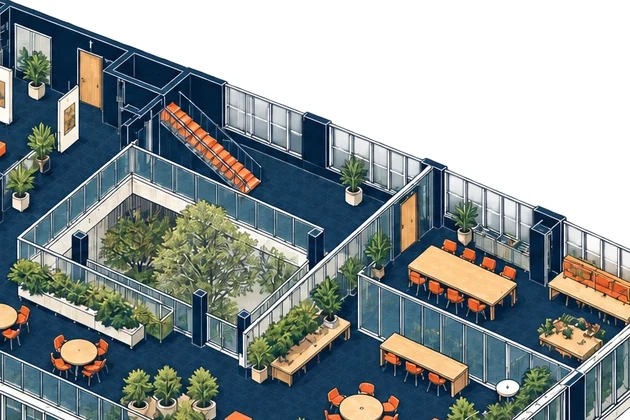
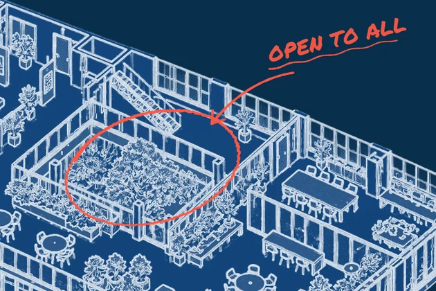
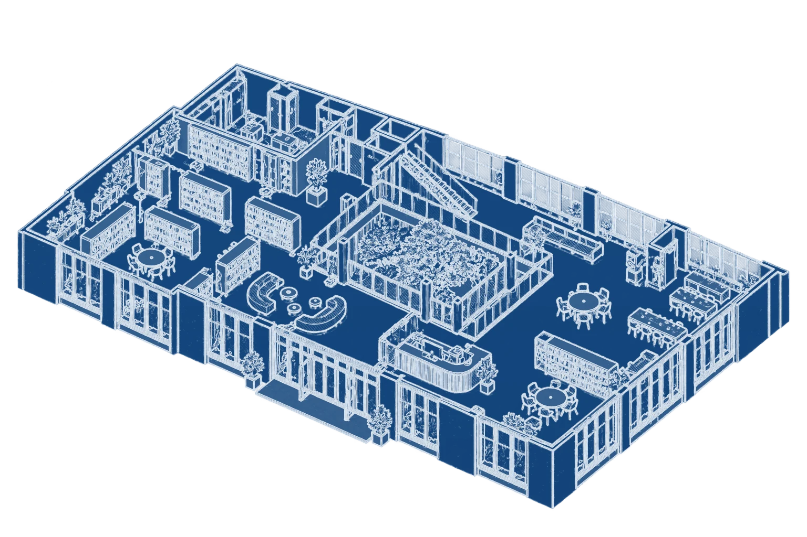
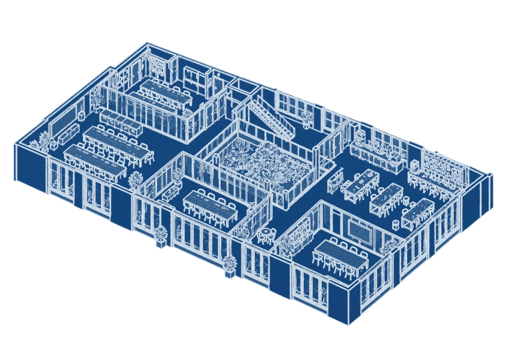
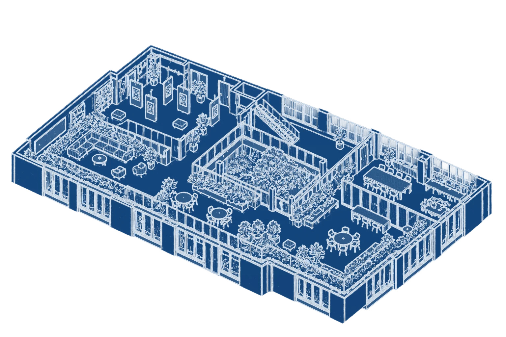
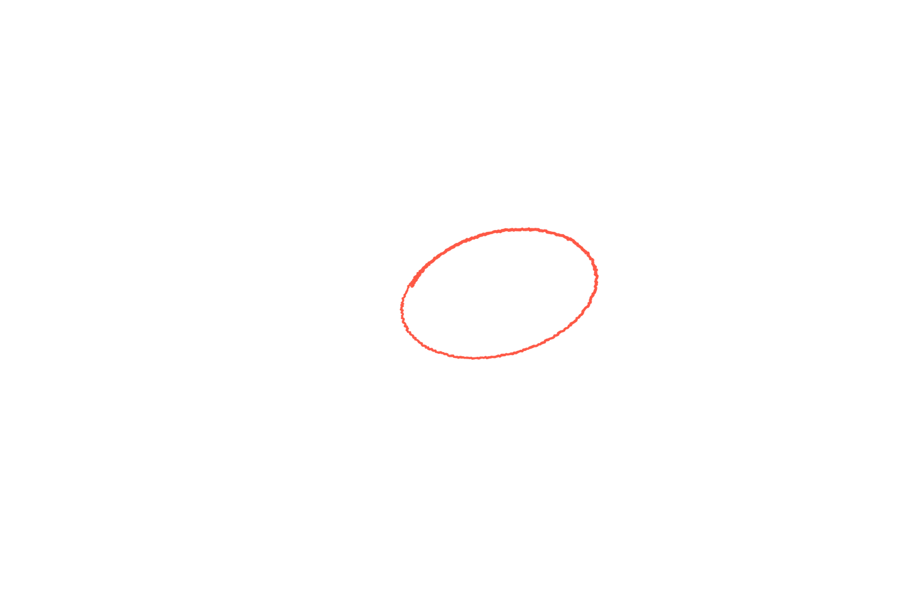
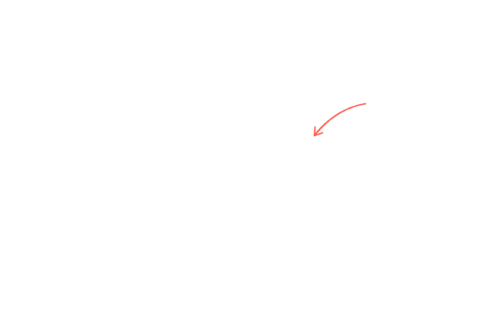
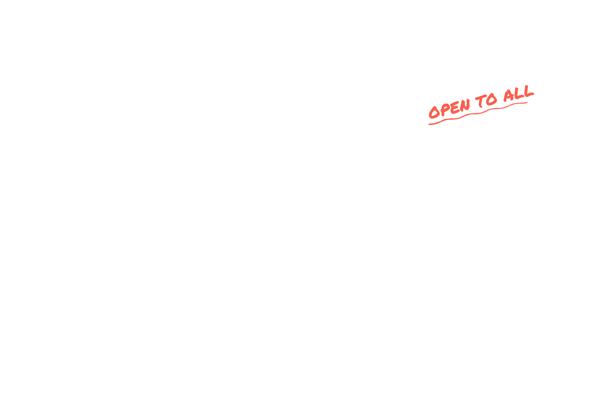
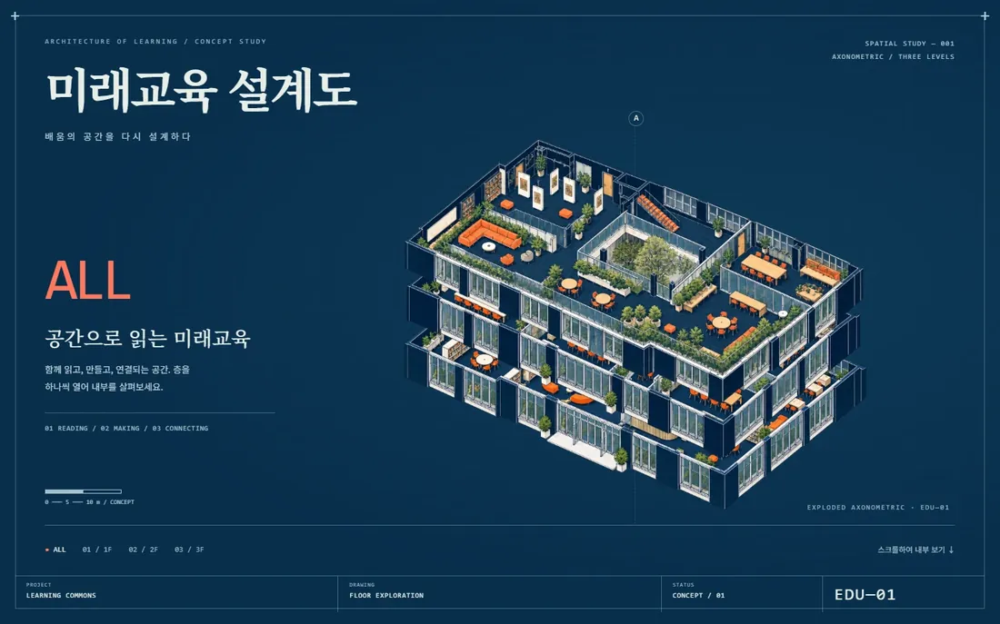

색칠 그림 → 청사진 펜 스케치
원본 층 그림의 형태는 그대로 두고 그리는 방식만 바꿨다. 색 경계를 흰 펜 선으로 따고, 잔디테일은 연필 결로, 중간 밝기 면은 30° 해칭·교차 해칭으로. 바닥은 코발트 종이색으로 채워 층이 겹쳐도 뒤 선이 비치지 않는다. 중정에는 빨간 펜 원·화살표·OPEN TO ALL — ALL과 3F에서 한 획씩 그려진다.
Cover ReferenceNo. 71
청사진 위 펜 스케치로 그린 세 층이 하나씩 열린다. ALL → 1F 도서 공간 → 2F 학습실 → 3F 정원으로 넘어가고, 다시 쌓일 때 중정에 빨간 펜으로 OPEN TO ALL.
ARCHITECTURE OF LEARNING / CONCEPT STUDY
배움의 공간을 다시 설계하다






색칠된 아이소메트릭 층 그림을 청사진 스케치(흰 펜 선 + 30° 해칭 + 코발트 종이)로 바꾸고, 가운데 중정에 손으로 그린 빨간 원·화살표·OPEN TO ALL을 얹었다. 원래 스크롤 연출을 장표용 시간축으로 옮겨 14초 자동 재생, 층 버튼으로 멈춰 보기. 가상 예시


원본 층 그림의 형태는 그대로 두고 그리는 방식만 바꿨다. 색 경계를 흰 펜 선으로 따고, 잔디테일은 연필 결로, 중간 밝기 면은 30° 해칭·교차 해칭으로. 바닥은 코발트 종이색으로 채워 층이 겹쳐도 뒤 선이 비치지 않는다. 중정에는 빨간 펜 원·화살표·OPEN TO ALL — ALL과 3F에서 한 획씩 그려진다.
손대지 않은 것제목·설명 글·층 정보·하단 도면 표제란·층 이동 연출(원본 HTML의 스크롤 타임라인)은 그대로. 원본은 화면 전체를 스크롤로 넘기는 페이지라, 장표 안에서 돌도록 시간축 자동 재생으로 옮겼다.

원본: 이미지 생성 AI로 만든 시안. 글자가 그림에 박혀 있다.
파란 종이 + 흰 선 + 도면 표제란(PROJECT·DRAWING·STATUS). "아직 설계 중, 함께 만든다"는 말을 그림이 대신한다.
공간 재구조화, 신축·리모델링, 중장기 계획 표지
쌓인 건물에서 층을 하나씩 빼 보여 주고 다시 쌓는다. 층 = 기능(읽기·만들기·잇기).
층별 기능 소개, 단계별 사업 구성
파랑·흰색 도면 위에 손으로 그은 빨강은 딱 한 군데, 가장 말하고 싶은 곳(누구나 오는 중정)에만.
핵심 하나를 짚을 때 — 두 군데 이상 쓰면 힘이 빠진다
원칙 — 그림은 글자 없이 뽑고, 글자는 HTML·PPT로 얹는다. AI 그림 속 작은 한글은 거의 깨지고, 박힌 글자는 고칠 수 없다.
Exploded isometric view of one floor of a 3-story school learning commons, blueprint style: crisp white ink pen lines with fine 30° cross-hatching on cobalt blue paper (#144880), same camera angle for every floor, floor plate centered and filling 80% of width, flat blue background, no text. (1F library + reception + lounge, 2F studio classrooms + maker space, 3F garden + exhibition.)
#05314E80%#1B4A7C7%#BDCFDF5%#5075984%#8BA6C14%#E7614F0%완성본에서 뽑은 주요 색과 화면 차지 비율.
u 단위(지면 폭 기준) 숫자를 바꾸면 됩니다.